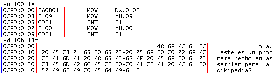
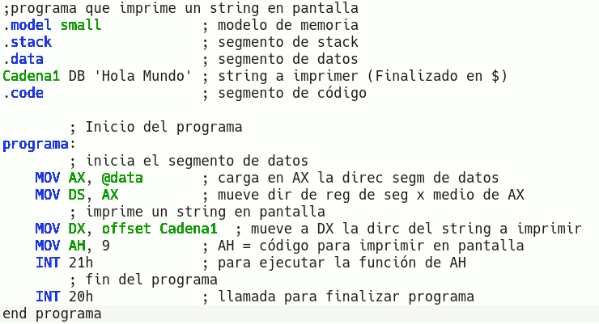
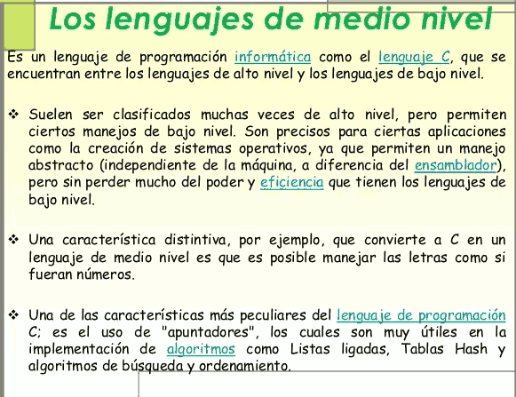
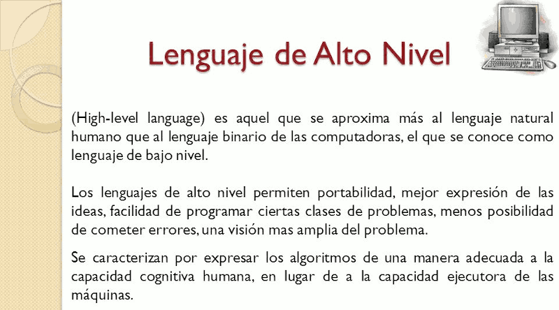
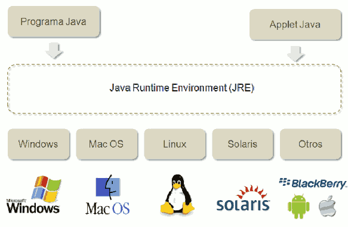
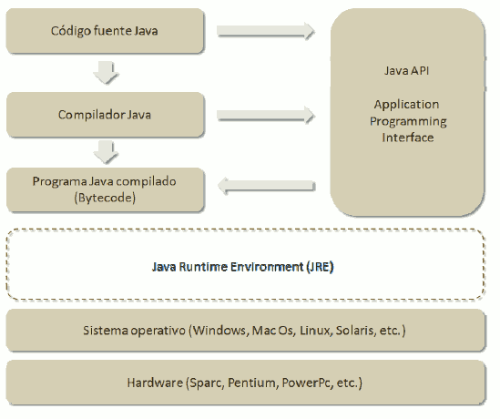

Según la cercanía del lenguaje a la máquina, los lenguajes pueden clasificarse de la siguiente manera:
Java_Introducción
1.4.1. Nivel del lenguaje
Bajo Nivel
Un lenguaje de programación de características bajo nivel es aquel en el que sus instrucciones ejercen un control directo sobre el hardware y están condicionados por la estructura física de los ordenadores/dispositivos electrónicos que lo soportan. Así, el programa de un procesador Intel no funcionaría en un ordenador AMD o MAC. Emtre los lenguajes de bajo nivel encontramos:
- El lenguaje máquina de unos y ceros (corriente eléctrica de dos voltajes) es el único lenguaje realmente que comprende el ordenador. Un código de un programa implementado en cualquier lenguaje se someterá a una serie de traducciones encaminadas a la obtención del código máquina final.
 - Lenguaje ensamblador: se trataría de la primera aproximación a un lenguaje más próximo al usado por humanos, pero que también puedan entender las máquinas. Se utilizan mnemónicos para representar las instrucciones que se ejecutarán en el procesador. El proceso de ensamblado consiste en utilizar una tabla para sustituir cada instrucción por su correspondiente en código máquina. Así, la instrucción mov AL, 61h (mover al registro AL el valor 61 en hexadecimal) se transformaría en código máquina a 10110000 01100001 donde 1011 representa la instrucción mov; 0000 representa el regitro AL; y 01100001 representa al 61h.

Medio Nivel
Un lenguaje de medio nivel es aquel que posee instrucciones propias de los lenguajes de bajo nivel (por ejemplo puede acceder a registros del procesador) y, además, instrucciones propias de los lenguajes de alto nivel. Un ejemplo de lenguaje de medio nivel es el lenguaje C.

Alto Nivel
Un lenguaje de programación de alto nivel se caracteriza por expresar los algoritmos de una manera similar al lenguaje humano, en lugar de estar condicionado por la forma de funcionar las máquinas. Para ello se realiza un proceso de abstracción que permite al programador abstraerse de la forma de funcionar las máquinas (cómo almacena la información, de qué manera, tipo de pantalla, disco, impresora, etc) permitiendo a éste centrarse centrándose la lógica del programa.

Java
Java es un lenguaje de programación de Alto Nivel desarrollado por Sun Microsystems y presentada en 1995. Se buscaba diseñar un lenguaje que permitiera programar una aplicación una sola vez que luego pudiera ejecutarse en distintas máquinas y sistemas operativos (Write Once, Run Anyware) gracias al Java Runtime Environment (JRE), que gratuito y está disponible para los principales sistemas operativos.

Los programas Java se compilan a un lenguaje intermedio, denominado Bytecode. Este código es interpretado por la máquina virtual de Java del JRE y así se consigue la portabilidad en distintas plataformas.
Un programa Java compilado en Bytecode se puede ejecutar en sistemas operativos como Windows, Linux, Mac Os, Solaris, BlackBerry OS, iOs o Android utilizando el entorno de ejecución de Java (JRE) apropiado.
La portabilidad de Java ha contribuido a que muchas empresas hayan desarrollado sus sistemas de comercio electrónico y sus sistemas de información en Internet con Java. El proceso de desarrollo y de mantenimiento de los sistemas resulta menos costoso y las aplicaciones son compatibles con distintos sistemas operativos.
Java ha evolucionado muy rápidamente. La plataforma de desarrollo de Java ( Java Development Kit ) JDK, se ha ido ampliando con el tiempo. En realidad Java no solo es un lenguaje de programación, sino que incluye un lenguaje, una plataforma de desarrollo (JDK), un entorno de ejecución (JRE) y un conjunto de librerías (Java API Application Programming Interface) para desarrollo de programas sofisticados.

Llicenciat sota la Llicència Creative Commons Reconeixement CompartirIgual 4.0